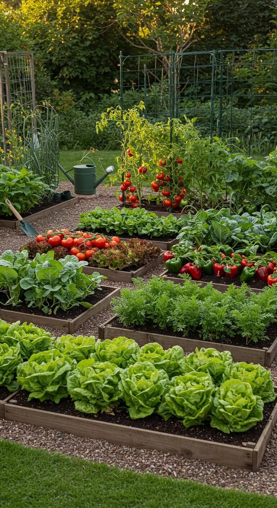

Our Projects & Programs
From raised-bed vegetable plots to community workshops, every GreenReach project is designed to build food security and bring neighbours together.



Urban Farming Workshops
Hands-on sessions teaching residents how to grow vegetables and herbs in small urban spaces.
Composting & Sustainability
Learn how to compost kitchen waste and turn it into nutrient-rich soil for the garden.
Community Nutrition Classes
Workshops on healthy eating and using garden produce in daily meals.
Volunteer Garden Plots
Community members can manage a small garden plot and contribute to local food security.